OuiSi Getty
All 210 Getty Art Cards
-

Oinochoe
Unknown artist/maker, about 625 B.C.
Card 1
-

Large Butterburr Leaves and Grass
Gilles-François-Joseph Closson, about 1825–1829
Card 2
-

Comb Brooch
Unknown artist/maker, 700–650 B.C.
Card 3
-

Cameo Gem with Minerva set into a Hollow Ring
Unknown artist/maker, 1st century A.D.
Card 4
-

Twenty-eight miscellaneous beads and one stud
Unknown artist/maker, 225–175 B.C.
Card 5
-

Fragmentary Neolithic Standing Female Figurine
Unknown artist/maker, 6th–5th millennium B.C.
Card 6
-

Miniature Skeleton
Unknown artist/maker, 25 B.C.–A.D. 100
Card 7
-

Wrist bracelet in the form of a coiled snake
Unknown artist/maker, 225–175 B.C.
Card 8
-

Juniper
Georg Dionysius Ehret (German, 1708 - 1770), 1745
Card 9
-

Pictorial Presentation. N.Y.A. Work Experience Activities in New York City. Produced by N.Y.A. Photography Workshop. Director Arnold Eagle
Arnold Eagle (American, 1909 - 1992), Arnold Eagle (American, 1909 - 1992), about 1940–1942
Card 10
-

Hall of the Ambassadors, Alhambra, Granada
Joaquín Sorolla y Bastida (Spanish, 1863 - 1923), 1909
Card 11
-

An Old Woman with Cat
Max Liebermann (German, 1847 - 1935), 1878
Card 12
-
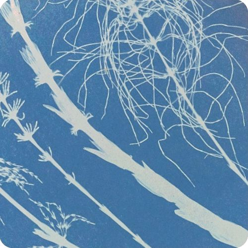
Equisetum sylvaticum
Anna Atkins (British, 1799 - 1871), and Anne Dixon (British, 1799 - 1877), 1853
Card 13
-
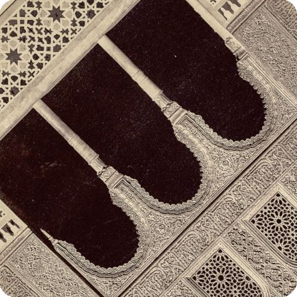
Ventana de la Sala de las dos hermanas, Alhambra, Granada
Juan Laurent (French, 1816 - 1886), 1875
Card 14
-
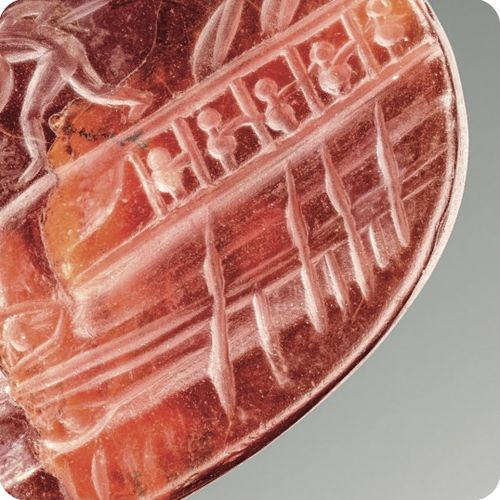
Engraved Scaraboid with Protesilaos on the Prow of a Ship
Unknown artist/maker, 400–350 B.C.
Card 15
-
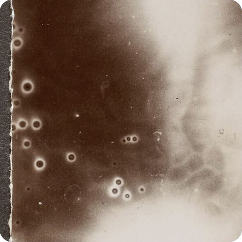
Petite bouteille
Louis Darget (French, 1847 - 1923), June 5, 1896
Card 16
-
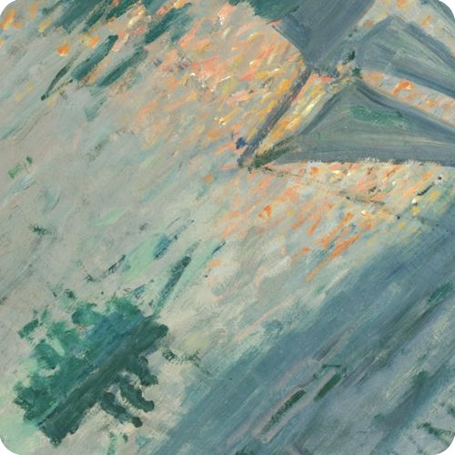
Sunrise (Marine)
Claude Monet (French, 1840 - 1926), 1872 or 1873
Card 17
-

Paestan Red-Figure Fish Plate
Attributed to the Binningen Painter, third quarter of 4th century B.C.
Card 18
-
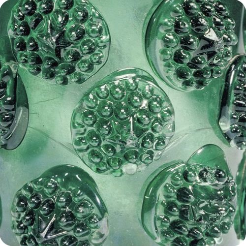
Thick-Walled Beaker (Unzerbrechlicher Becher)
Unknown artist/maker, 1643
Card 19
-
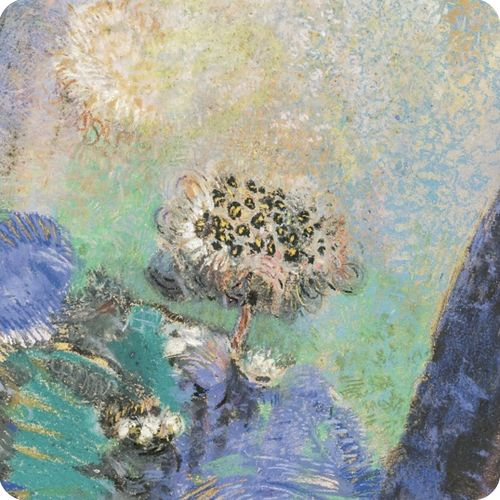
Baronne de Domecy
Odilon Redon (French, 1840 - 1916), about 1900
Card 20
-
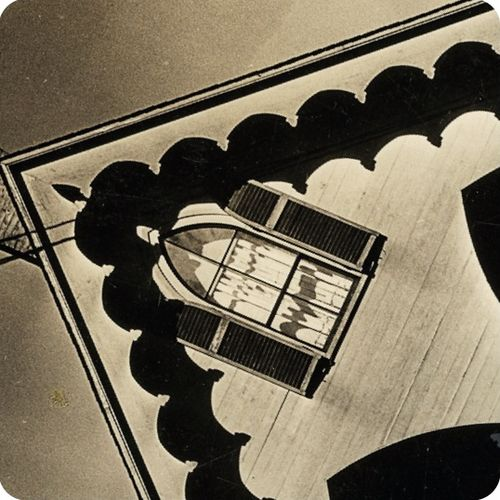
[Wooden Gothic House, Massachusetts]
Walker Evans (American, 1903 - 1975), 1930
Card 21
-
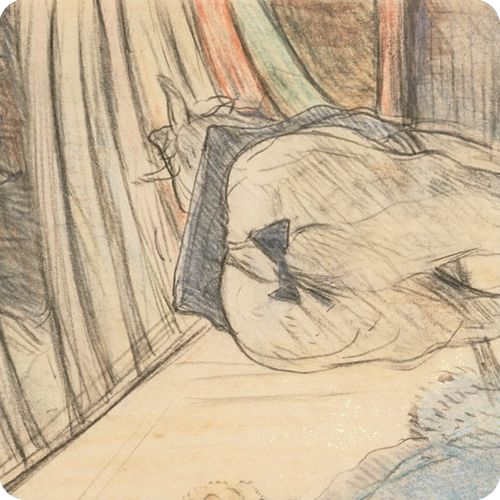
Au cirque: Entrèe en piste
Henri de Toulouse-Lautrec (French, 1864 - 1901), 1899
Card 22
-
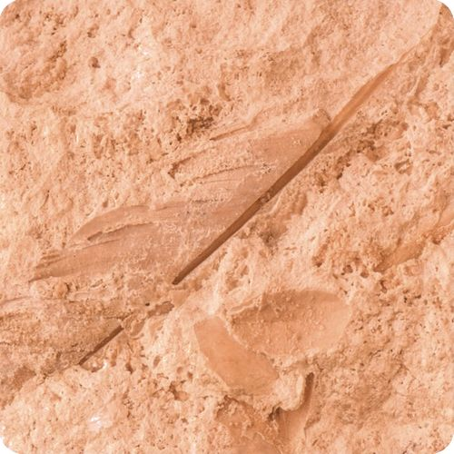
Getty Center Travertine Wall Feather Fossil Detail
Photograph by Cindy Anderson, © 1997 J. Paul Getty Trust
Card 23
-
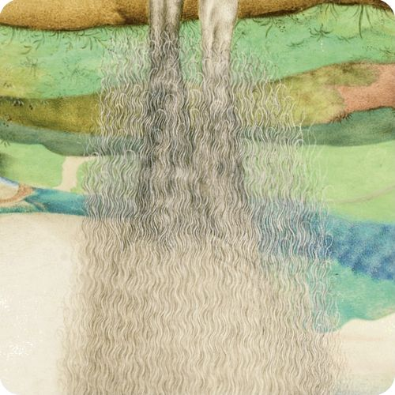
A Dappled Gray Stallion Tethered in a Landscape
Unknown maker, Prague School, late 16th century, about 1584–1587
Card 24
-
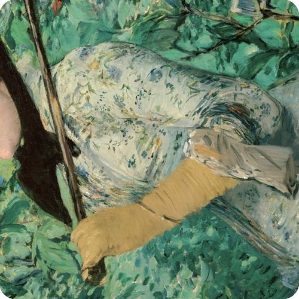
Jeanne (Spring)
Édouard Manet (French, 1832 - 1883), 1881
Card 25
-
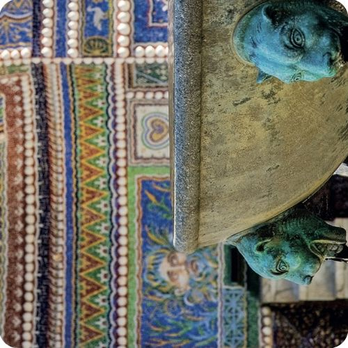
Getty Villa East Garden Fountain Detail
Photograph by Tahnee L. Cracchiola, © 2011 J. Paul Getty Trust
Card 26
-
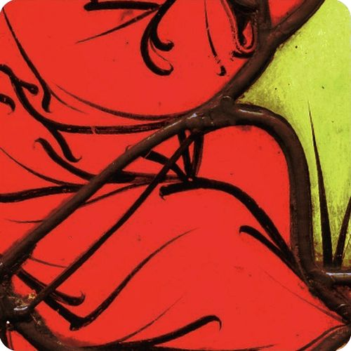
The Virgin and Child
Master of Klosterneuburg (Austrian, active early 14th century), about 1335
Card 27
-
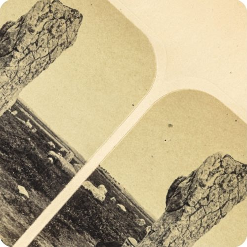
Druidical Stone, Morbihan
Henry Taylor (British, 1800 - 1886), about 1859
Card 28
-
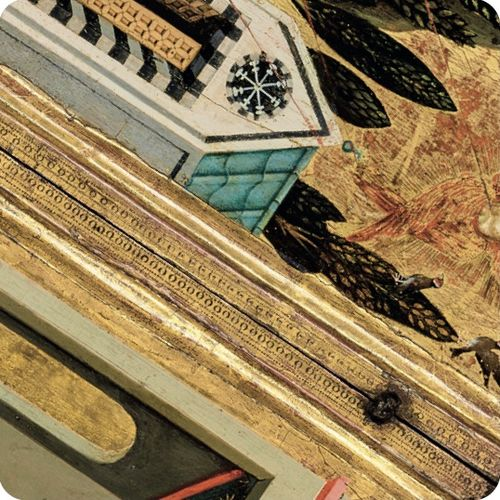
The Stigmatization of Saint Francis, and Angel Crowning Saints Cecilia and Valerian
Unknown Italian, Neapolitan or Avignon School, 1330s
Card 29
-
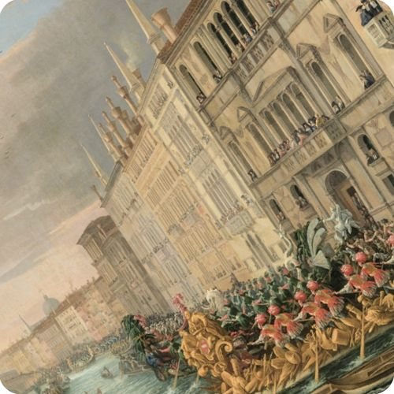
Regatta on the Grand Canal in Honor of Frederick IV, King of Denmark
Luca Carlevarijs (Italian, 1663 - 1730), 1711
Card 30
-
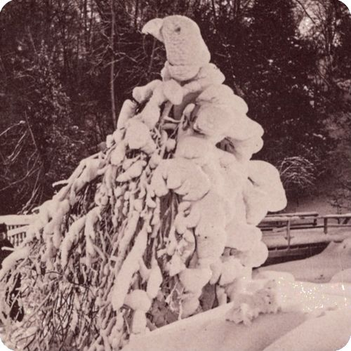
Niagara - Ice formation in shape of eagles head - Luna Island
George Barker (American, 1844 - 1894), about 1865–1880
Card 31
-

Dish with a Peacock Feather Pattern
Unknown artist/maker, about 1470–1500
Card 32
-
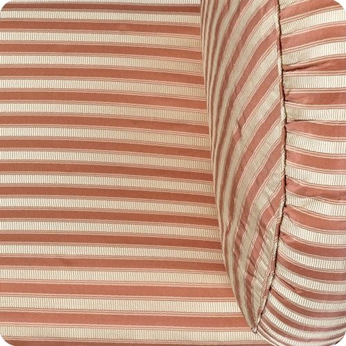
Four Side Chairs (chaises à la reine)
Jacques Gondoin (French, 1737 - 1818), François-Toussaint Foliot (French, 1748 - about 1839, master 1773), Probably carved by Toussaint Foliot (French, about 1715 - 1798, master 1732), 1780–1781
Card 33
-
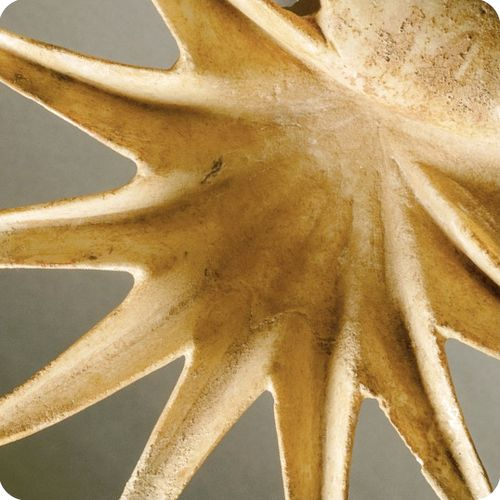
Shell
Unknown artist/maker, 400–325 B.C.
Card 34
-
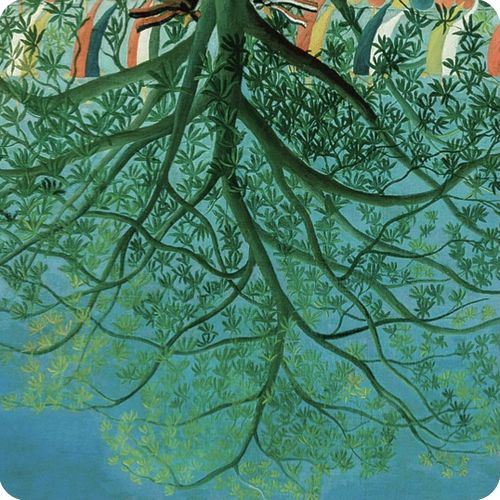
A Centennial of Independence
Henri Rousseau (French, 1844 - 1910), 1892
Card 35
-
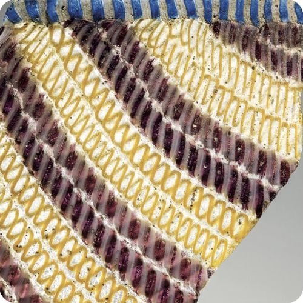
Cast Fragment
Unknown artist/maker, 2nd century B.C.–1st century A.D.
Card 36
-
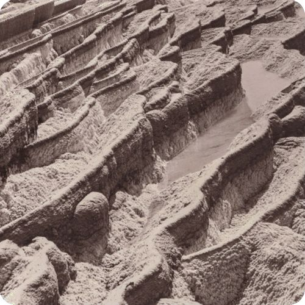
White Terrace, New Zealand
Burton Brothers (New Zealander, founded 1866, dissolved 1914), about 1860s–1880s
Card 37
-
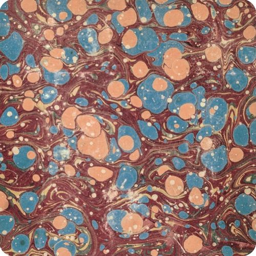
The Art Journal Illustrated Catalogue: The Industry of All Nations 1851.
Unknown maker, German, 1851
Card 38
-
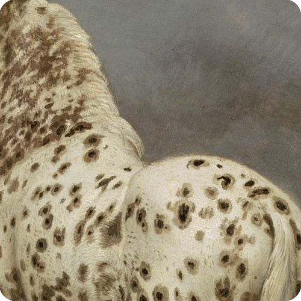
The "Piebald" Horse
Paulus Potter (Dutch, 1625 - 1654), about 1650–1654
Card 39
-

Cast Fragment
Unknown artist/maker, 2nd century B.C.–1st century A.D.
Card 40
-
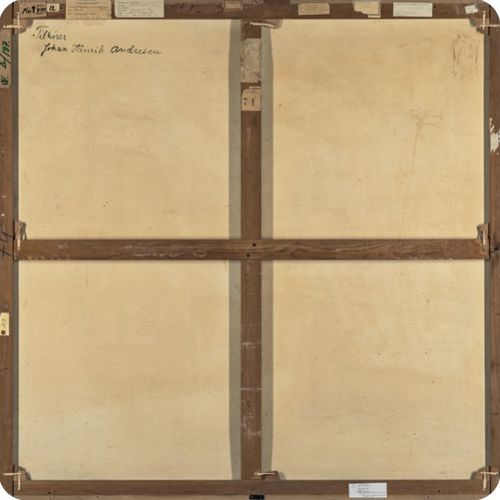
Starry Night
Edvard Munch (Norwegian, 1863 - 1944), 1893
Card 41
-
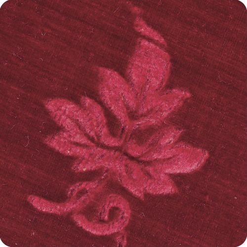
[Portrait of a mother with her four children]
Unknown maker, American, about 1845
Card 42
-
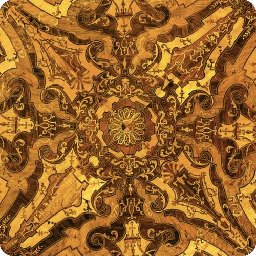
Floor
Unknown artist/maker, about 1725
Card 43
-
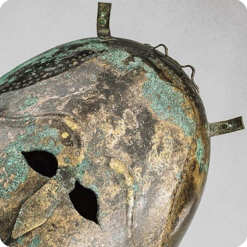
Helmet
Unknown artist/maker, 400–375 B.C.
Card 44
-
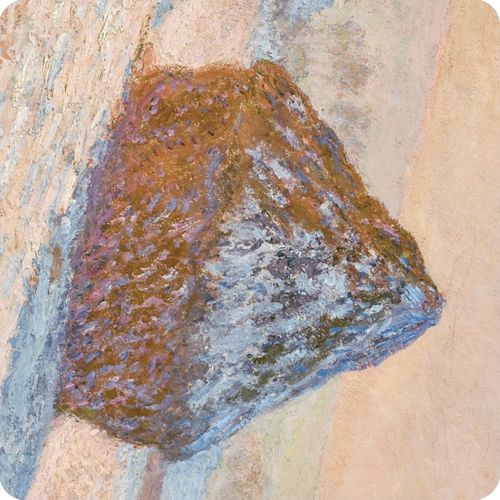
Wheatstacks, Snow Effect, Morning (Meules, Effet de Neige, Le Matin)
Claude Monet (French, 1840 - 1926), 1891
Card 45
-
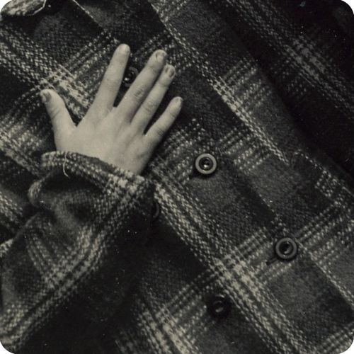
Pledge of Allegiance, Raphael Weill Elementary School, San Francisco
Dorothea Lange (American, 1895 - 1965), negative April 20, 1942; print about 1960s
Card 46
-
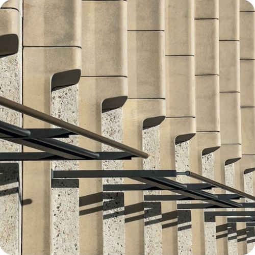
Amphitheater seating at the Getty Villa Museum
Paul Brillinger, 2022
Card 47
-
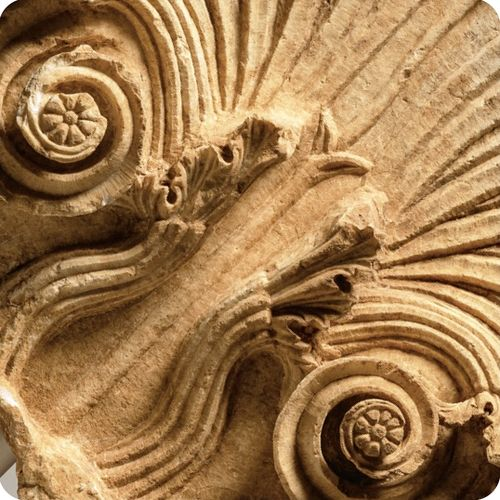
Anthemion of a Grave Stele
Unknown artist/maker, about 320 B.C.
Card 48
-
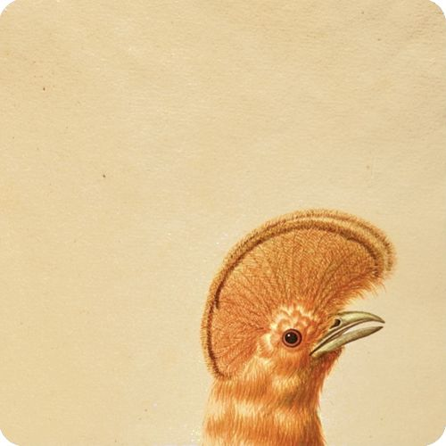
Rupicola Rupicola
Sarah Stone (English, about 1760 - 1844), 1788
Card 49
-
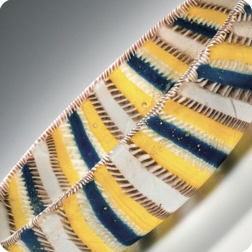
Bowl
Compagnia di Venezia e Murano (Italian, founded 1866, dissolved 1909), 1880s
Card 50
-
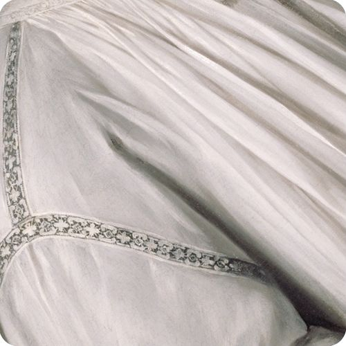
Antoine Singlin
Philippe de Champaigne (French, 1602 - 1674), about 1646
Card 51
-
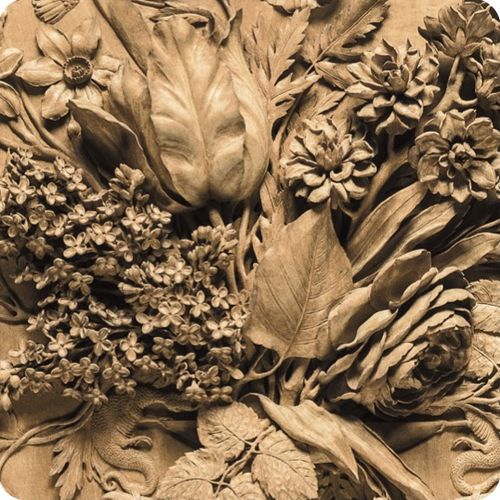
Carved Relief
Aubert-Henri-Joseph Parent (French, 1753 - 1835), 1789
Card 52
-
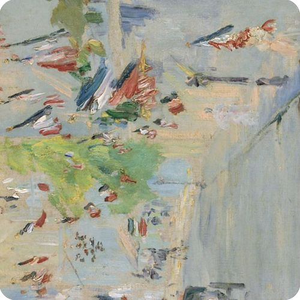
The Rue Mosnier with Flags
Édouard Manet (French, 1832 - 1883), 1878
Card 53
-
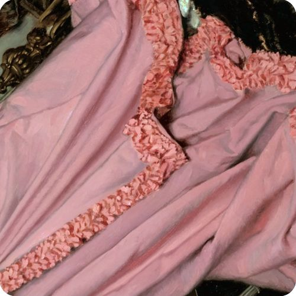
Portrait of the Marquise de Miramon, née Thérèse Feuillant
Jacques Joseph Tissot (French, 1836 - 1902), 1866
Card 54
-
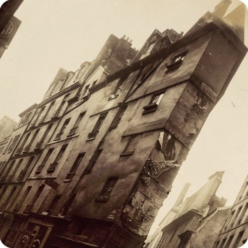
Coin rue de Seine
Eugène Atget (French, 1857 - 1927), 1924
Card 55
-
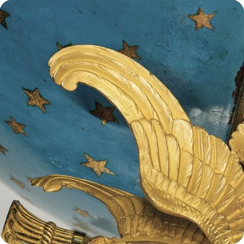
Chandelier
Gérard Jean Galle (French, 1788 - 1846), about 1818–1819
Card 56
-
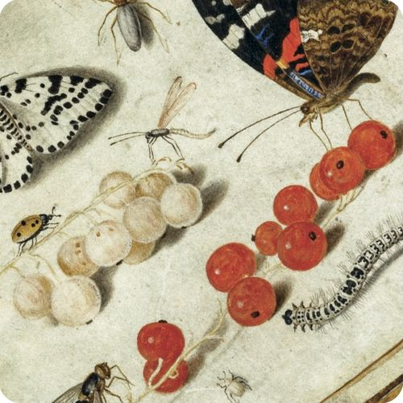
Butterfly, Caterpillar, Moth, Insects, and Currants
Jan van Kessel II (Flemish, 1626 - 1679), about 1650–1655
Card 57
-
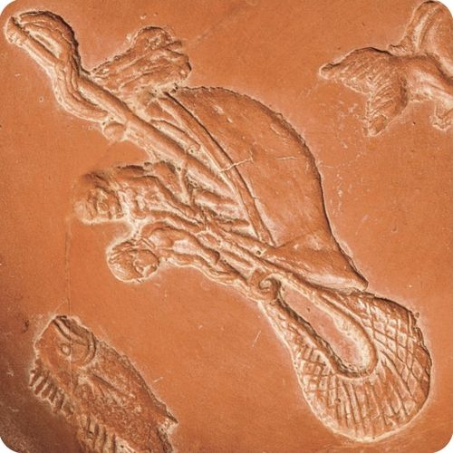
Red-Slip Bowl
Unknown artist/maker, about A.D. 400
Card 58
-
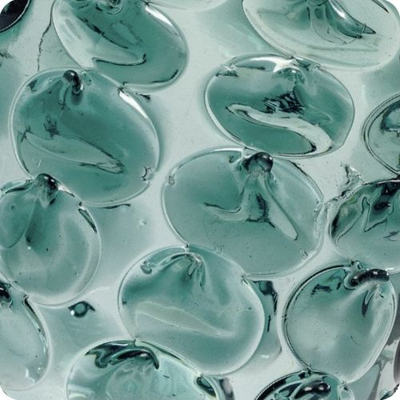
Prunted Beaker
Unknown artist/maker, 16th century
Card 59
-
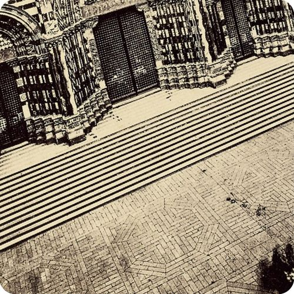
[Genoa Cathedral]
Unknown maker, Italian, about 1870 - 1890
Card 60
-
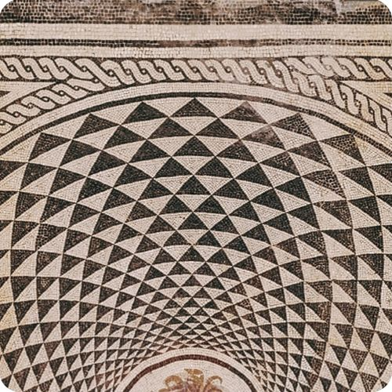
Mosaic Floor with Head of Medusa
Unknown artist/maker, about A.D. 115–150
Card 61
-
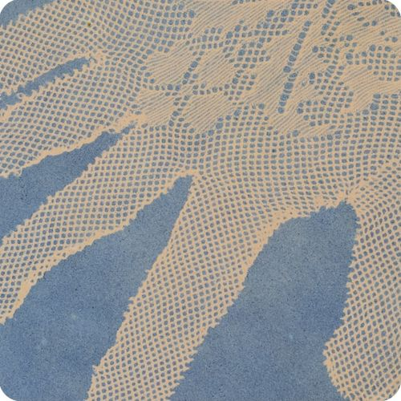
[Lace Glove]
Hippolyte Bayard (French, 1801 - 1887), about 1843–1846
Card 62
-
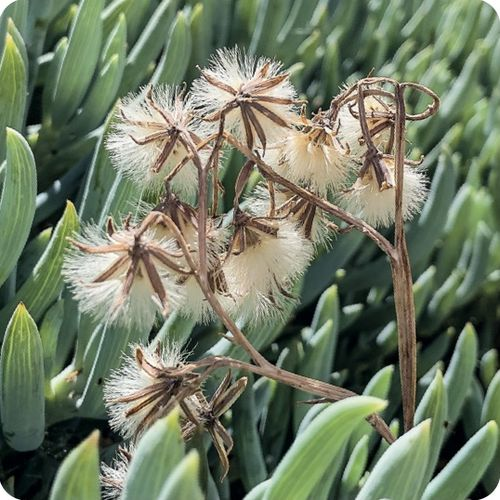
Curio Repens at the Getty Center Museum
Paul Brillinger, 2022
Card 63
-
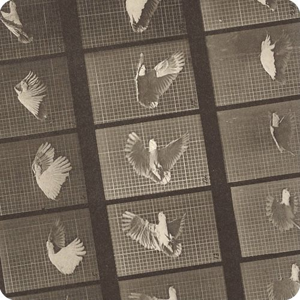
Animal Locomotion
Eadweard J. Muybridge (American, born England, 1830 - 1904), 1887
Card 64
-
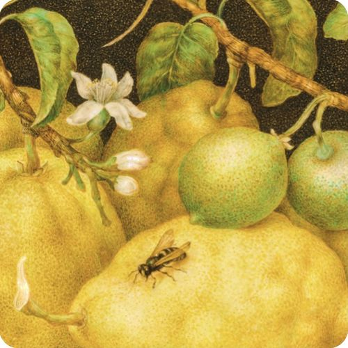
Still Life with Bowl of Citrons
Giovanna Garzoni (Italian, 1600 - 1670), late 1640s
Card 65
-
Pair of Altars with Relief Decoration
Unknown artist/maker, first quarter of 4th century B.C.
Card 66
-
Fresco Fragment: Woman on a Balcony
Unknown artist/maker, 10 B.C.–A.D. 14
Card 67
-
Self-Portrait, Yawning
Joseph Ducreux (French, 1735 - 1802), by 1783
Card 68
-
[Repeated geometric pattern with figures]
Unknown artist/maker, about 1870–1890
Card 69
-
Tester
Unknown artist/maker, about 1690–1715
Card 70
-
Two Studies of Dancers
Edgar Degas (French, 1834 - 1917), about 1873
Card 71
-
Oval Basin
Attributed to Bernard Palissy (French, about 1510 - 1590), about 1550
Card 72
-
Aerial View of the Getty Villa
Photograph by Christopher Sprinkle, © 2019 J. Paul Getty Trust
Card 73
-
Portrait of Agostino Pallavicini
Anthony van Dyck (Flemish, 1599 - 1641), about 1621
Card 74
-
Portrait of Edward Carrington, Jr.
Gurney Studio, 1842
Card 75
-
The Wounded Foot
Joaquín Sorolla y Bastida (Spanish, 1863 - 1923), 1909
Card 76
-
Burgundy Ribbed Bowl (Rippenschale) with White Trails
Unknown artist/maker, second half of 1st century B.C.
Card 77
-
Cypripedium
Anna Atkins (British, 1799 - 1871), and Anne Dixon (British, 1799 - 1877), 1854
Card 78
-
Collage
John Bingley Garland (British, 1791 - 1875), 1850s–1860s
Card 79
-
Hallway at the Getty Villa Museum
Paul Brillinger, 2022
Card 80
-
Studies for a Ceiling Decoration with the Apotheosis of Psyche (recto); Studies for a Ceiling Decoration with the Apotheosis of Psyche (verso)
Charles de La Fosse (French, 1636 - 1716), about 1680
Card 81
-
Reverie
John William Godward (British, 1861 - 1922), 1904
Card 82
-
Japanese Tattoo
Kusakabe Kimbei (Japanese, 1841 - 1934), or Baron Raimund von Stillfried (Austrian, 1839 - 1911), 1870s - 1890s
Card 83
-
Still Life with Blue Pot
Paul Cézanne (French, 1839 - 1906), about 1900–1906
Card 84
-
Bust of a Flavian Woman
Unknown artist/maker, late 1st century A.D.
Card 85
-
Bowl
Unknown artist/maker, 300–100 B.C.
Card 86
-
Cup and Saucer (gobelet litron et soucoupe, deuxième grandeur)
Painted by Etienne-Jean Chabry the Younger (French, active 1765 - 1787), Gilded by Michel-Barnabe Chauvaux the Elder (French, born 1730), Sèvres Manufactory (French, founded 1756), 1773
Card 87
-
Four Beetles and a Flying Stink Bug
Nicolaas Struyck (Dutch, 1686 - 1769), 1715
Card 88
-
Spring in the Alps
Giovanni Segantini (Italian, 1858 - 1899), 1897
Card 89
-
Irises
Vincent van Gogh (Dutch, 1853 - 1890), 1889
Card 90
-
Pomegranate vase
Unknown artist/maker, 725–700 B.C.
Card 91
-
The Conversion of St. Paul
Christoph Daniel Schenck (German, 1633 - 1691), 1685
Card 92
-
Young Woman in a Rocking Chair, study for the painting "The Last Evening"
Jacques Joseph Tissot (French, 1836 - 1902), about 1873
Card 93
-
Mammoth Hot Springs
Frank Jay Haynes (American, 1853 - 1921), around 1885
Card 94
-
Basket (panier, deuxième grandeur)
Sèvres Manufactory (French, founded 1756), 1757
Card 95
-
Dionysius the Areopagite Converting the Pagan Philosophers
Antoine Caron (French, 1521 - 1599), 1570s
Card 96
-
Purple Oleander
Pieter Withoos (Dutch, 1654 - 1692), 1691
Card 97
-
Aerial View of the Getty Research Institute
Photograph by Christopher Sprinkle, © 2019 J. Paul Getty Trust
Card 98
-
Study of a Pleated Skirt
Hans Brosamer (German, about 1500 - about 1554), about 1530–1540
Card 99
-
Flowers and Beetles
Hans Hoffmann (German, about 1530 - 1591/1592), 1582
Card 100
-
Portrait of Isabella of Portugal
Workshop of Rogier van der Weyden (Netherlandish, 1399/1400 - 1464), about 1450
Card 101
-
[Man with Striped Cap]
Jack Delano (American, born Russia, 1914 - 1997), negative about 1940; print later
Card 102
-
Fragment of a Mosaic Glass Vessel
Unknown artist/maker, 1st century B.C.–1st century A.D.
Card 103
-
The House of Phristinus
Simon Marmion (Flemish, active 1450 - 1489), 1475
Card 104
-
Euclid
Jusepe de Ribera (Spanish/ Italian, 1591 - 1652), about 1630–1635
Card 105
-
The Banks of the Marne at Dawn
Albert Dubois-Pillet (French, 1846 - 1890), about 1888
Card 106
-
Metamorphosis of a Small Emperor Moth on a Damson Plum, plate 13 of the Caterpillar Book
Maria Sibylla Merian (German, 1647 - 1717), 1679
Card 107
-
The Bird Catchers
François Boucher (French, 1703 - 1770), 1748
Card 108
-
Pepilla the Gypsy and Her Daughter
Joaquín Sorolla y Bastida (Spanish, 1863 - 1923), 1910
Card 109
-
Verdure with Château and Garden
Katharine Ghuys, the Widow Guillaume Werniers (French, died 1778, active from 1738), 1738–1778
Card 110
-
Christ and the Samaritan Woman
Alessandro Magnasco (Italian, 1667 - 1749), 1705–1710
Card 111
-
Daunian Stele Fragment
Unknown artist/maker, 4th century B.C.
Card 112
-
A Potentate Accompanied by His Halberd Bearer
Jusepe de Ribera (Spanish/ Italian, 1591 - 1652), about 1625–1630
Card 113
-
Getty Villa Outer Peristyle Garden
Photograph by Ellen M. Rosenbery, © 2011 J. Paul Getty Trust
Card 114
-
Three Dragonflies
Rochus van Veen (Dutch, active 1660 - 1693), 1681
Card 115
-
Bead
Unknown artist/maker, 7th century B.C.
Card 116
-
[Dinornis Elephantopus]
Roger Fenton (English, 1819 - 1869), 1854–1858
Card 117
-
Box
Saint-Cloud Porcelain Manufactory (French, active by 1693 - 1766), 1730–1740
Card 118
-
Curio Shop
Felice Beato (English, born Italy, 1832 - 1909), 1868
Card 119
-
Interior with an Easel, Bredgade 25
Vilhelm Hammershøi (Danish, 1864 - 1916), 1912
Card 120
-
The Forum, Pompeii, with Vesuvius in the Distance
Christen Schjellerup Købke (Danish, 1810 - 1848), 1841
Card 121
-
Architectural Detail of the Getty Center Café
Photograph by Scott Frances/Esto, © 1996 J. Paul Getty Trust
Card 122
-
Bust of a Man
Francis Harwood (English, 1726/1727 - 1783), 1758
Card 123
-
Secrétaire
Philippe-Claude Montigny (French, 1734 - 1800, master 1766), about 1770–1775
Card 124
-
Italian Landscape (Site d'Italie, Soleil Levant)
Jean-Baptiste-Camille Corot (French, 1796 - 1875), about 1835
Card 125
-
Four-o'Clock, Brown Hairstreak, Herb Robert, and Chanterelle
Joris Hoefnagel (Flemish / Hungarian, 1542 - 1600), and Georg Bocskay (Hungarian, died 1575), 1561–1562; illumination added 1591–1596
Card 126
-
Miniature Bust
Unknown artist/maker, 300–200 B.C.
Card 127
-
Saint Jerome Extracting a Thorn from a Lion's Paw
Master of the Murano Gradual (Italian, active about 1430 - 1460), second quarter of 15th century
Card 128
-
Saint Luke
Unknown artist/maker, about 1504–1505
Card 129
-
L'Air
Aristide Maillol, Designed in 1938 and cast in 1962
Card 130
-
Portrait of Maria Frederike van Reede-Athlone at Seven Years of Age
Jean-Étienne Liotard (Swiss, 1702 - 1789), 1755–1756
Card 131
-
Alabastron
Unknown artist/maker, 4th–3rd century B.C.
Card 132
-
Fruit Piece
Jan van Huysum (Dutch, 1682 - 1749), 1722
Card 133
-
Battle Scene
Attributed to Johannes Lingelbach (Dutch, 1622 - 1674), about 1651–1652
Card 134
-
Flooring detail at the Getty Villa Museum
Paul Brillinger, 2022
Card 135
-
Mummy Portrait of a Woman
Unknown artist/maker, A.D. 175–200
Card 136
-
The Grand Canal in Venice from Palazzo Flangini to Campo San Marcuola
Canaletto (Giovanni Antonio Canal) (Italian, 1697 - 1768), about 1738
Card 137
-
Mural at the Getty Villa Museum
Paul Brillinger, 2022
Card 138
-
Canon Table Page
Unknown artist/maker, about 1504–1505
Card 139
-
Head with Horns
Unknown artist/maker, before 1894
Card 140
-
Attic Red-Figure Footed Dinos
Attributed to the Syleus Painter (Greek (Attic), active 490 - 470 B.C.), about 470 B.C.
Card 141
-
Pollarded Sycamore trees at the Getty Center Museum
Paul Brillinger, 2022
Card 142
-
Relief Fragment of Two Men
Unknown artist/maker, A.D. 50–75
Card 143
-
Daybed
Gabriele Capello (Italian, 1806 - 1876), Designed by Filippo Pelagio Palagi (Italian, 1775 - 1860), 1842
Card 144
-
Pictura (An Allegory of Painting)
Frans van Mieris the Elder (Dutch, 1635 - 1681), 1661
Card 145
-
Initial E: David Lifting up His Soul to God
Franco dei Russi (Italian, active about 1453 - 1482), about 1455–1461
Card 146
-
Castle Well and Castle Geyser
Frank Jay Haynes (American, 1853 - 1921), about 1885
Card 147
-
Common Pear, Lake Demoiselle, Moor Frog, and Hyacinth
Joris Hoefnagel (Flemish / Hungarian, 1542 - 1600), and Georg Bocskay (Hungarian, died 1575), 1561–1562; illumination added 1591–1596
Card 148
-
Reflecting pool at the Getty Villa Museum
Kaz Brecher, 2022
Card 149
-
Attic Black-Figure Kyathos
Attributed to Group of Berlin 2095 (Greek (Attic)), about 510 B.C.
Card 150
-
St. John the Baptist
Master of the Harburger Altar (German, active about 1500 - 1515), about 1515
Card 151
-
One square
Unknown artist/maker, about A.D. 385–400
Card 152
-
Portrait of a Boy in Fancy Dress
Nicolas de Largillierre (French, 1656 - 1746), about 1710–1714
Card 153
-
Interior of Roman Building with Figures
Ettore Forti (Italian, active late 19th century - early 20th century), late 19th century
Card 154
-
Christ's Entry into Brussels in 1889
James Ensor (Belgian, 1860 - 1949), 1888
Card 155
-
Statuette of a Bull
Unknown artist/maker, 25 B.C.–A.D. 75
Card 156
-
Tree bark at the Getty Villa Museum
Kaz Brecher, 2022
Card 157
-
Plate with Hero and Leander
Unknown artist/maker, about 1525
Card 158
-
Figure of a Fertility Goddess
Unknown artist/maker, 3000–2500 B.C.
Card 159
-
The Assumption of the Virgin
Peter Paul Rubens (Flemish, 1577 - 1640), and Paulus Pontius (Flemish, 1603 - 1658), about 1624
Card 160
-
Shield Strap Fragment
Signed by Aristodamos of Argos (Greek (Argive), active 590 - 570 B.C.), about 575 B.C.
Card 161
-
A Hare in the Forest
Hans Hoffmann (German, about 1530 - 1591/1592), about 1585
Card 162
-
Fibula with a Deer and a Monkey
Unknown artist/maker, 700–650 B.C.
Card 163
-
The Virgin and Child with the Archangels Michael and Gabriel
Unknown artist/maker, about 1504–1505
Card 164
-
Aerial View of the Getty Center
Photograph by Christopher Sprinkle, © 2017 J. Paul Getty Trust
Card 165
-
Mediterranean Harbor Scene
Pierre-Jacques Volaire (French, 1729 - 1799), about 1763
Card 166
-
Carnations
Georg Dionysius Ehret (German, 1708 - 1770), 1750s
Card 167
-
Shipping in a Calm at Flushing with a States General Yacht Firing a Salute
Jan van de Cappelle (Dutch, 1626 - 1679), 1649
Card 168
-
Male Harp Player of the Early Spedos Type
Unknown artist/maker, 2700–2300 B.C.
Card 169
-
Vase of Flowers
Jan van Huysum (Dutch, 1682 - 1749), 1722
Card 170
-
Self-Portrait
Francesco Paolo Michetti (Italian, 1851 - 1929), 1877
Card 171
-
Solon before Croesus
Nikolaus Knüpfer (Dutch, about 1603 - 1655), about 1650–1652
Card 172
-
David with the Head of Goliath
Guido Cagnacci (Italian, 1601 - 1663), about 1645–1650
Card 173
-
Basin with Deucalion and Pyrrha
Fontana Workshop, Possibly Orazio Fontana (Italian, 1510 - 1571), or Possibly Flaminio Fontana (Italian, active 1571 - 1591), about 1565–1575
Card 174
-
Washington Street, New York City / Wash Day
Walker Evans (American, 1903 - 1975), about 1930
Card 175
-
Mantel Clock
Movement by Nicolas-Alexandre Folin (French, about 1750 - after 1815, master 1789), and Enamel plaques by Georges-Adrien Merlet (French, born 1754, active 1780s), about 1790–1800
Card 176
-
Commode
Attributed to Jean-Pierre Latz (French, about 1691 - 1754), about 1745–1749
Card 177
-
The Milliners
Edgar Degas (French, 1834 - 1917), about 1882–before 1905
Card 178
-
Cabinet on Stand
Attributed to André-Charles Boulle (French, 1642 - 1732, master before 1666), and Medallions after Jean Varin (French, 1596 - 1672), about 1675–1680
Card 179
-
Open Doors, Mexico City
Tina Modotti (American, born Italy, 1896 - 1942), 1925
Card 180
-
Tapestry: Portière aux Armes de France
Woven under the direction of Etienne-Claude Le Blond (French, about 1700 - 1751), Pierre-Josse Perrot (French, active 1724 - 1750), Royal Factory of Furniture to the Crown at the Gobelins Manufactory (French, founded 1662), designed 1727, woven about 1730–1740
Card 181
-
Waiting (L'Attente)
Edgar Degas (French, 1834 - 1917), about 1882
Card 182
-
City Hall Park, New York
Paul Strand (American, 1890 - 1976), 1915
Card 183
-
Pair of Three-panel Screens (paravents)
Savonnerie Manufactory (French, active 1627 - present), After cartoons by Jean-Baptiste Belin de Fontenay (French, 1653 - 1715), and Alexandre-François Desportes (French, 1661 - 1743), about 1714–1740
Card 184
-
Sitemap Model at the Getty Center Museum
Paul Brillinger, 2022
Card 185
-
[Pont des Saints-Pères]
Charles Marville (French, 1813 - 1879), about 1877
Card 186
-
Water spewing at the Getty Villa Museum
Paul Brillinger, 2022
Card 187
-
Pilgrim Flask
Unknown artist/maker, late 15th or early 16th century
Card 188
-
Getty Center Museum Entrance Hall from the Courtyard
Photograph by Scott Frances/Esto, © 1996 J. Paul Getty Trust
Card 189
-
Night Clock
Case and hardstone mosaics by Giovanni Battista Foggini (Italian, 1652 - 1725) Woodwork by Leonard van der Vinne (Flemish, active Italy 1659 - died 1713) in the Galleria de'Lavori in pietre dure (Italian, founded 1588) Bronze figures attributed to Massimiliano Soldani-Benzi (Italian, 1656 - 1740) Mechanism by Francesco Papillion (Italian, active around 1700), 1704–1705
Card 190
-
[President Lincoln, United States Headquarters, Army of the Potomac, near Antietam]
Alexander Gardner (American, born Scotland, 1821 - 1882), October 4, 1862
Card 191
-
Writing Table
Unknown artist/maker, about 1670–1675
Card 192
-
Still Life with Apples
Paul Cézanne (French, 1839 - 1906), 1893–1894
Card 193
-
Destitute Pea Pickers, California
Dorothea Lange (American, 1895 - 1965), 13210
Card 194
-
Wall Clock (Pendule à répétition)
Clock movement by Charles Voisin (French, 1685 - 1761, master 1710), Chantilly Porcelain Manufactory (French, active about 1730 - 1805), about 1740
Card 195
-
Bois de Boulogne, Paris
Charles Marville (French, 1813 - 1879), negative about 1858; print after 1871
Card 196
-
[Optical illusion]
Unknown artist/maker, 1850s
Card 197
-
Group of Morning Glories
Kazumasa Ogawa (Japanese, 1860 - 1929), 1896
Card 198
-
[Optical illusion of a drawing of a couple on a see-saw]
Unknown artist/maker, 1850s
Card 199
-
"Shariki," or Cart Pushing Coolies
Felice Beato (English, born Italy, 1832 - 1909), 1866–1867
Card 200
-
Lily
Kazumasa Ogawa (Japanese, 1860 - 1929), 1896
Card 201
-
Suspension Bridge Niagara.
Unknown artist/maker, 1860
Card 202
-
L'Après midi [sic] d'un Faune (Nijinsky)
Léon Bakst (Russian, 1866 - 1924), 1912
Card 203
-
Mosaic Floor with Achilles and Briseis
Unknown artist/maker, A.D. 100–300
Card 204
-
Moonlit Landscape with a View of the New Amstel River and Castle Kostverloren
Aert van der Neer (Dutch, 1603/1604 - 1677), 1647
Card 205
-
Bust of Emperor Commodus
Unknown maker, Roman, A.D. 180–185
Card 206
-
Pair of Wall Lights
Attributed to Pierre-François Feuchère (French, 1737 - 1823, master 1763), or Jean-Pierre Feuchère (French, 1807 - 1852, master 1767), about 1787–1788
Card 207
-
Situla and fragments
Unknown artist/maker, 750–700 B.C.
Card 208
-
Dried Sweetgum at the Getty Center Museum
Paul Brillinger, 2022
Card 209
-
Minerva
Augustin Pajou (French, 1730 - 1809), about 1775–1785
Card 210